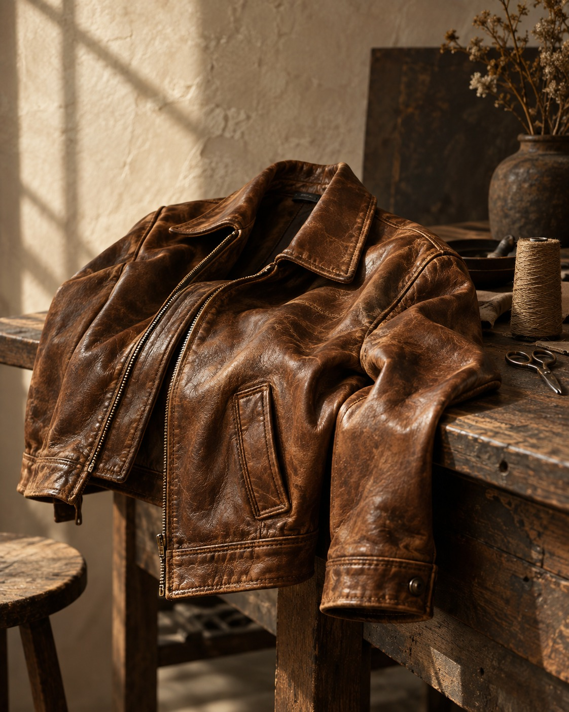

Покажите вещь
Отправьте фото общего вида и повреждения в WhatsApp или приходите в ателье.
Возвращаем красоту коже и меху.
Сохраняем то, что делает
вашу вещь особенной.

GH / MATIÈRE № 01КОЖА. ХАРАКТЕР. ВРЕМЯ.От небольшой потёртости
до полного преображения.
У каждой вещи — своё решение.
Мягкость кожи, глубина оттенка, знакомая фактура. В реставрации важна каждая деталь, которая делает вещь вашей.
Передвиньте разделитель —
рассмотрите изменения в деталях.


Куртка с историей. Сумка, которую вы брали в каждую поездку. Шуба, переданная по наследству.
Мы работаем с кожей и мехом, чтобы эти истории продолжались. Подбираем способ восстановления под материал, его состояние и ваши пожелания. Обсуждаем ожидаемый результат до начала работы.
Разные фактуры требуют разных решений — от гладкой кожи до замши и меха.
Подбор оттенка, восстановление покрытия, аккуратные швы и фурнитура.
Используем специализированные составы Saphir и Fenice.
Отправьте фото общего вида и повреждения в WhatsApp или приходите в ателье.
Оценим материал, согласуем объём работ, стоимость и сроки восстановления.
Выполним согласованные работы и подскажем, как ухаживать за обновлённой вещью.
Стоимость зависит от материала и сложности повреждения. Здесь — начальные цены. Точную сумму мастер назовёт после осмотра.
Окончательная стоимость согласовывается до начала работ.
Да, отправьте мастеру фотографию всей вещи и крупный план повреждений при дневном свете. По снимкам можно обсудить предварительную стоимость. Окончательное решение принимается после осмотра материала.
Возможности зависят от состояния кожи или меха, глубины повреждения и предыдущего ухода. Сначала мастер осмотрит вещь и расскажет, какого результата можно ожидать.
Ориентир для реставрации куртки — 3–5 рабочих дней, сумки — 2–4 дня, перекроя шубы — 5–10 дней. Точный срок зависит от сложности работ и загрузки ателье; его согласуют при приёме вещи.
Волгоград, ул. Ангарская, 114. Вход с торца здания магазина, рядом с поликлиникой №30. Работаем с понедельника по субботу с 10:00 до 19:00, в воскресенье — по предварительной записи.
Пн–Сб · 10:00–19:00
Вс · по предварительной записи
Перед визитом можно позвонить
и обсудить вашу задачу.